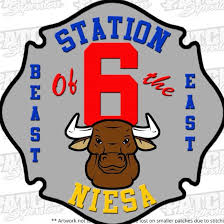

73 years strong!
Join us for a weekend full of different activites and events that everyone will love.
Hosted at N.I.E.S.A. Station 6/Leroy Township Fire Department:
315
Walnut St., Webberville, MI 48892

An image associated with Station 6 and NIESA.
Friday, September 27th, 2019
- Ox Burgers Served @ Noon
- Carnival Rides
- Arts & Crafts in Pole Barn
- Webberville Lions Club Social Barn
- Live Music @ 6PM: Handsome Pete - Merchant Drawing Between Sets
Saturday, September 28th, 2019
- Kids Parade @ 9AM
- Carnival Rides
- Ox Burgers @ Noon
- Arts & Crafts in Pole Barn
- Webberville Lions Club Social Barn
- Main Parade on Grand River @ 2PM
- Grand Marshal: TOM COE
- County Line Pullers Tractor Pulls @ 3PM
- Ox Burger Eating Contest
- Live Music @ 6PM: Hollywood & Vinyl - Merchant Drawing Between Sets
Sunday, September 29th, 2019
- Webberville FFA Chicken BBQ @ Noon
The LTFD Firefighter's Association thanks you for your continuous support of the Ox Roast. Your contributions have made a significant impact on our departmant and the community!